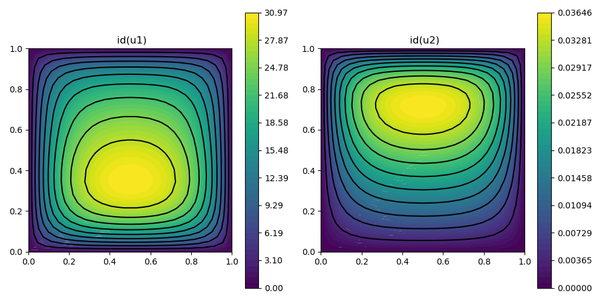

214 : Two nonlinearly coupled PDEs (2D)
This example computes the solutions $u_1$ and $u_2$ of the two coupled nonlinear PDEs
\[\begin{aligned} -\nu_1 \Delta u_1 + \alpha_1 u_1u_2 & = f_1 \quad \text{in } \Omega\\ -\nu_2 \Delta u_2 + \alpha_2 u_1u_2 & = f_2 \quad \text{in } \Omega \end{aligned}\]
with given data $\nu$, $\alpha$ and right-hand sides $f_1$, $f_2$ on the unit cube domain $\Omega$.
This example demonstrates how to define this problem with one NonlinearForm per equation that can be automatically differentiated to solve the problem with Newton's method.
module Example214_TwoNonlinearCoupled2D
using GradientRobustMultiPhysics
# problem data
const f = [x -> 1, x -> 2*x[2]]
const ν = [1e-3,1]
const α = [1,1]
# everything is wrapped in a main function
function main(; verbosity = 0, Plotter = nothing)
# set log level
set_verbosity(verbosity)
# build/load any grid (here: a uniform-refined 2D unit square into triangles)
xgrid = uniform_refine(grid_unitsquare(Triangle2D),4)
# create empty PDE description
Problem = PDEDescription("Problem")
# add two unknown with zero boundary data
add_unknown!(Problem; unknown_name = "u1", equation_name = "Equation for u1")
add_unknown!(Problem; unknown_name = "u2", equation_name = "Equation for u2")
add_boundarydata!(Problem, 1, [1,2,3,4], HomogeneousDirichletBoundary)
add_boundarydata!(Problem, 2, [1,2,3,4], HomogeneousDirichletBoundary)
# add equations for unknowns as single NonlinearForms
function operator_kernel(id)
return function closure(result,input,x)
# input = [u1,∇u1,u2]
result[1] = α[id]*input[1]*input[4] - f[id](x) # will be multiplied with identity of test function
result[2] = ν[id]*input[2] # will be multiplied with 1st component of gradient of testfunction
result[3] = ν[id]*input[3] # will be multiplied with 2nd component of gradient of testfunction
return nothing
end
end
add_operator!(Problem,[1,1], GenerateNonlinearForm("ν1 (∇u1,∇v) + α1 (u1 u2,v) - (f1,v)", [OperatorPair{Identity,Gradient},Identity], [1,2], OperatorPair{Identity,Gradient}, operator_kernel(1), [3,4]; dependencies = "X", ADnewton = true, quadorder = 0) )
add_operator!(Problem,[2,2], GenerateNonlinearForm("ν2 (∇u2,∇v) + α2 (u1 u2,v) - (f2,v)", [OperatorPair{Identity,Gradient},Identity], [2,1], OperatorPair{Identity,Gradient}, operator_kernel(2), [3,4]; dependencies = "X", ADnewton = true, quadorder = 0) )
# discretise (here: u1 with P3, u2 with P2)
FETypes = [H1P3{1,2},H1P2{1,2}]
FES = [FESpace{FETypes[1]}(xgrid),FESpace{FETypes[2]}(xgrid)]
Solution = FEVector{Float64}(["u1","u2"],FES)
# show problem and Solution structure
@show Problem Solution
# solve for chosen Solution vector
solve!(Solution, Problem)
# plot solution (for e.g. Plotter = PyPlot)
GradientRobustMultiPhysics.plot(xgrid, [Solution[1], Solution[2]], [Identity, Identity]; Plotter = Plotter)
end
endThis page was generated using Literate.jl.
Default output:
julia> Example214_TwoNonlinearCoupled2D.main()
PDE-DESCRIPTION
===============
system name = Problem
id | unknown name / equation name
[1] | u1 / Equation for u1
[2] | u2 / Equation for u2
LHS block | PDEOperator(s)
[1,1] | ν1 (∇u1,∇v) + α1 (u1 u2,v) - (f1,v) [AD-Newton] [∂u1] (APT = NonlinearForm, AT = ON_CELLS, regions = [0])
[1,2] | ν1 (∇u1,∇v) + α1 (u1 u2,v) - (f1,v) [AD-Newton] [∂u2] (APT = NonlinearForm, AT = ON_CELLS, regions = [0])
[2,1] | ν2 (∇u2,∇v) + α2 (u1 u2,v) - (f2,v) [AD-Newton] [∂u1] (APT = NonlinearForm, AT = ON_CELLS, regions = [0])
[2,2] | ν2 (∇u2,∇v) + α2 (u1 u2,v) - (f2,v) [AD-Newton] [∂u2] (APT = NonlinearForm, AT = ON_CELLS, regions = [0])
RHS block | PDEOperator(s)
[1] | ν1 (∇u1,∇v) + α1 (u1 u2,v) - (f1,v) [AD-Newton] (APT = NonlinearForm, AT = ON_CELLS, regions = [0])
[2] | ν2 (∇u2,∇v) + α2 (u1 u2,v) - (f2,v) [AD-Newton] (APT = NonlinearForm, AT = ON_CELLS, regions = [0])
BoundaryOperator[1] : HomogeneousDirichletBoundary -> [1, 2, 3, 4]
BoundaryOperator[2] : HomogeneousDirichletBoundary -> [1, 2, 3, 4]
Problem =
Solution =
FEVector information
====================
block | ndofs | name (FEType)
[ 1] | 4705 | u1 (H1P3{1,2})
[ 2] | 2113 | u2 (H1P2{1,2})
ITERATION | LSRESIDUAL | NLRESIDUAL
--------------------------------------
1 | 4.155834e-15 | 9.824796e-02
2 | 2.587627e-15 | 1.810300e-02
3 | 1.989142e-15 | 1.549532e-03
4 | 1.987387e-15 | 1.656753e-05
5 | 1.967407e-15 | 1.966716e-09
6 | 1.947778e-15 | 3.484383e-15
